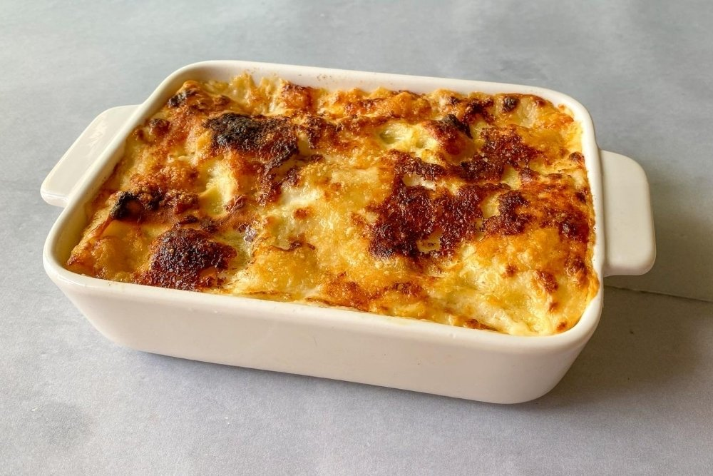

Pizza Margherita

La Pizza Margherita es un clásico italiano con ingredientes sencillos:
- Masa: Harina, agua, levadura, sal.
- Salsa de tomate: Tomates maduros, ajo, albahaca, aceite de oliva, sal y pimienta.
- Queso: Mozzarella fresca.
Procedimiento:
- Prepara la masa y estírala en un círculo.
- Extiende la salsa de tomate sobre la masa.
- Añade la mozzarella y hojas de albahaca.
- Hornea hasta que la pizza esté dorada.
Lasagna Boloñesa

La Lasagna Boloñesa es un platillo tradicional de la región de Emilia-Romaña:
- Placas de lasaña: Harina, huevo, sal.
- Relleno: Salsa Boloñesa, queso ricotta, queso parmesano.
- Bechamel: Leche, mantequilla, harina, nuez moscada.
Procedimiento:
- Cocina las placas de lasaña.
- Arma capas con la salsa Boloñesa, el queso ricotta y las placas de lasaña.
- Prepara la bechamel y vierte sobre la lasagna.
- Hornea hasta que esté dorada.